Inloggen
Zodra u een zakelijk account heeft bij DHL Parcel, maken wij direct een account voor My DHL Parcel voor u aan. U ontvangt een e-mail met een activatielink, waarmee u zelf een wachtwoord kunt instellen. De activatielink is 48 uur geldig. Is de link verlopen? Dan vraagt u via my.dhlparcel.nl een nieuw wachtwoord aan via Wachtwoord vergeten. Nadat uw account is geactiveerd, logt u altijd in via my.dhlparcel.nl. Voor de beste gebruikerservaring raden wij u aan om Google Chrome te gebruiken.
Zodra u bent ingelogd, ziet u het dashboard. Dit is een overzicht van de belangrijkste elementen van de verzendservice. U ziet welke zendingen klaarstaan om te verzenden, welke zendingen een uitzondering hebben en u kunt uw zendingen rechtstreeks op het dashboard volgen via track en trace. Ten slotte ziet u welke nieuwe functies zijn toegevoegd aan My DHL Parcel. Klik op het potloodje om elementen toe te voegen en te verwijderen van het dashboard.
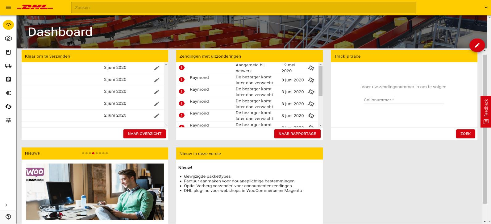
Een standaard verzendadres instellen
Om een adres als standaard verzendadres in te stellen is het belangrijk dat dit adres in uw adresboek staat. Kies in het menu voor Adresboek. Voeg een adres toe via de rode button.
Kies vervolgens in het menu voor Instellingen en ga naar Standaard verzendadres onderaan de pagina. Selecteer hier het adres uit uw adresboek en het klantnummer dat u in combinatie met dit adres wilt gebruiken. Klik op de '+' om het adres als standaard toe te voegen.

Als u meerdere verzendadressen instelt, kunt u één adres kiezen dat standaard is geselecteerd bij het aanmaken van een nieuwe zending. De andere adressen die u hier toevoegt, kunt u gemakkelijk handmatig kiezen in het Nieuwe zending scherm.
Een printer instellen
In het menu Instellingen heeft u verschillende opties voor het instellen van de printer. De beschikbaarheid van deze opties hangt af van uw keuze bij Gebruik labelprinter.
Labelprinter instellen
Kies in het menu Instellingen voor de optie Gebruik labelprinter. Als u een labelprinter van het merk Zebra gebruikt, kunt u de optie Gebruik Zebra Printing Tool aanzetten om het printproces sneller te laten verlopen. U moet het programma ZPL daarvoor eerst downloaden en installeren. Let op: over het algemeen is de printkwaliteit van PDF-labels hoger dan die van ZPL labels. Neem contact op voor advies.
Kies voor de optie Automatisch printen als u direct het afdrukvoorbeeld wilt weergeven wanneer u bij het aanmaken van een nieuwe zending op de printknop klikt. Staat deze optie uit, dan wordt het label gedownload als PDF-bestand.
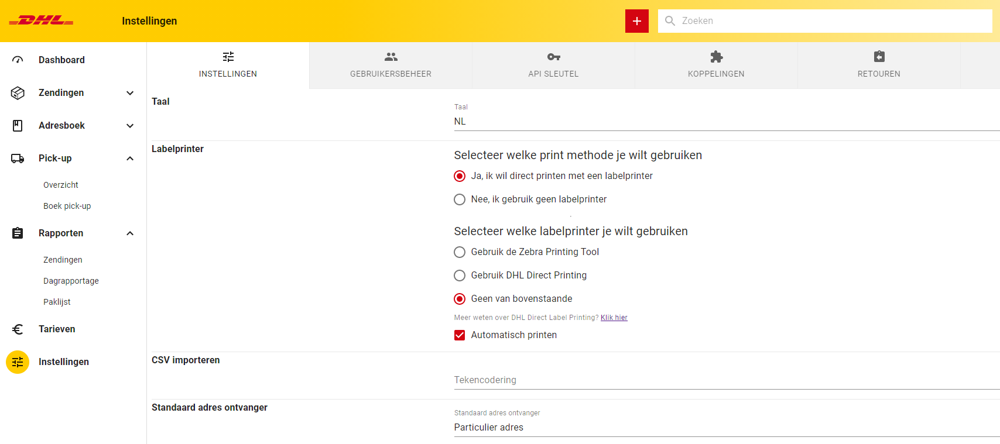
Bij uw lokale printerinstellingen stelt u het formaat van het label in op 10 x 21 cm.
Tip: maak bij de configuratie van uw labelprinter een voorkeursinstelling aan voor een ‘DHL label’ met het formaat 10 x 21 cm.
Gewone printer gebruiken
Als u gebruikmaakt van een gewone printer, dan zet u de optie Gebruik labelprinter uit. Hiermee krijgt u twee nieuwe opties. Ten eerste kunt u kiezen hoeveel labels u per A4 pagina wilt printen (maximaal drie labels op één pagina). Daarnaast kunt u met de optie Handmatig labelpositie kiezen per zending bepalen op welke positie op de A4 pagina het label wordt geprint als u er voor kiest om minder dan drie labels per pagina te printen. Deze keuze krijgt u wanneer u een label print in het Nieuwe zending scherm.
Het is belangrijk om er bij uw lokale printerinstellingen voor te kiezen om printopdrachten ‘liggend’ (landscape) en in ‘ware grootte’ (actual size) te verwerken.
Een zending aanmaken
Nieuwe zending
Kies in het linker menu voor Zendingen> en ga naar Nieuwe zending.
Als u meerdere standaard verzendadressen heeft ingesteld, kunt u het adres wijzigen door er op te klikken in de gele balk. U kunt in het uitklapmenu ook klikken op Ander verzendadres, waarna u een geheel nieuw verzendadres kunt invullen.
Vul de gegevens van de ontvanger in, handmatig of uit uw adresboek. Velden met een * zijn verplicht. U kunt een zakelijk of particulier adres opgeven, hierbij ziet u meteen de mogelijke extra services. Geef vervolgens aan om welk type zending het gaat en uit hoeveel pakketten of pallets deze bestaat.
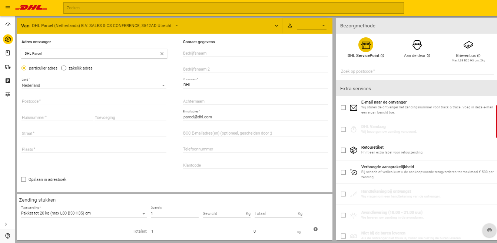
Nadat u alle velden heeft ingevuld, bewaart u het adres van de ontvanger door Opslaan in adresboek te selecteren. Zo worden bij uw volgende zending de gegevens automatisch ingevuld als u zoekt op bedrijfs-, voor- of achternaam. Handig als u vaker naar de ontvanger verstuurt.
Tenslotte print u met de printknop direct het label voor de zending. Uw zending vindt u vanaf dat moment terug in het Verstuurde zendingen scherm. Werkt de printknop niet? Controleer dan of u alle verplichte velden, ook bij de Extra services, heeft ingevuld.
Tip: wilt u een afhaling boeken? Vergeet dit dan niet te doen na het aanmaken van uw zending(en). U boekt uw afhaling in het Pick-up scherm.
Zending opslaan voor later
Wilt u meerdere labels tegelijk printen of uw zending op een later tijdstip versturen? Sla uw zending dan op in Concepten door uw muis op de printknop te plaatsen en op de verschijnende opslaan-knop te klikken. U vindt de zending nu in het Concepten scherm. Selecteer daar de zendingen die u wilt printen en klik op Print label. Vanaf nu vindt u uw zending weer terug bij Verstuurde zendingen.
Zending verwijderen
Zendingen waarvoor u al een label heeft aangemaakt, maar toch niet wilt versturen, kunt u archiveren of verplaatsen naar de prullenbak. Selecteer de zending(en) en kies in het menu voor Archiveer zending(en) of Naar prullenbak verplaatsen. De zending wordt verwijderd uit de lijst Verstuurde zendingen>. U kunt de prullenbak niet legen.
Standaard opties voor zendingen instellen
Als u vaak hetzelfde type zendingen verstuurt, kan het handig zijn om hiervoor een aantal standaarden in te stellen. Zo kunt u bij Instellingen een standaard adrestype kiezen (particulier of zakelijk), een standaard pakkettype en standaard extra services. U kiest de gewenste standaard extra services per klantnummer. Bij elke nieuwe zending worden deze standaarden toegepast (indien mogelijk in combinatie met uw type zending). U kunt de extra services makkelijk per zending aan- of uitvinken.
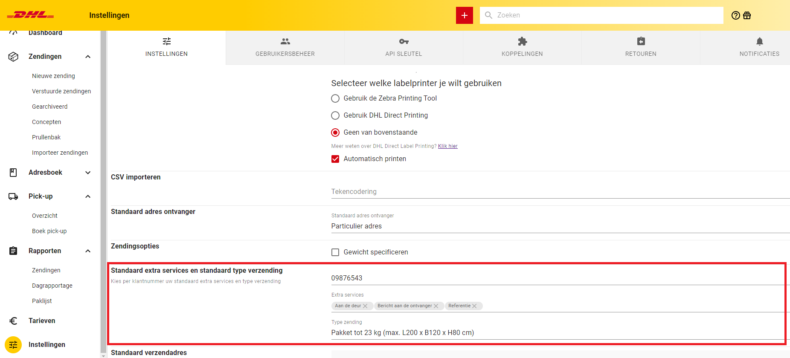
Het is ook mogelijk om een al aangemaakte zending snel te dupliceren. Ga naar Verstuurde zendingen of Gearchiveerde zendingen en klik op de zending die u wilt dupliceren. Kies vervolgens rechtsboven voor Nieuwe zending.

Tip: wilt u een afhaling boeken? Vergeet dit dan niet te doen na het aanmaken van uw zending(en). U boekt uw afhaling in het Pick-up scherm.
Douanefactuur maken
Wanneer u douaneplichtige zendingen verstuurt, moet u de juiste documenten bij uw zending voegen. Alle informatie hierover vindt u in onze douanebrochure.
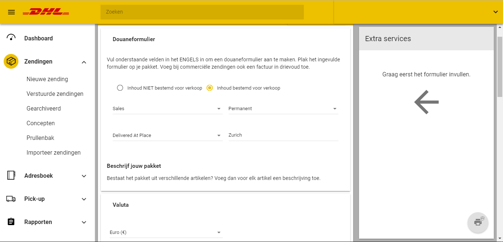
De factuur kunt u aanmaken in My DHL Parcel. Zodra u het land van bestemming selecteert, verschijnt onderaan de knop om een douaneformulier in te vullen.
Geef in het formulier dat verschijnt eerst aan of uw zending wel of niet bestemd is voor verkoop. Kies vervolgens een Export type en Export reden die geldt voor uw zending.
In de volgende velden selecteert u de Incoterms® en Incoterm stad. Incoterms® zijn de leveringsvoorwaarden die de overeengekomen afspraken weergeven tussen handelaren (koper en verkoper). De meest gebruikte zijn Delivered At Place en Delivered Duty Paid (deze laatste is alleen mogelijk voor zendingen naar Zwitserland). Meer informatie over Incoterms® vindt u in de douanebrochure.
Vul de valuta van het land van bestemming in. Direct hieronder voert u per artikel de juiste informatie in en kunt u met de gele knop eventueel artikelen toevoegen. Let er op dat het gewicht van uw zending altijd tenminste 1kg moet zijn. De HS-code of goederencode is een meercijferige code die de douane wereldwijd gebruikt om producten in te delen. Een lijst van codes vindt u hier of vraag uw leverancier.
Onder Extra informatie kunt u in het Engels eventuele opmerkingen toevoegen en moet u in elk geval uw btw-nummer invullen. Ook kunt u hier het btw-nummer van uw ontvanger, uw eigen factuurnummer en uw EORI-nummer toevoegen. Let op: Zwitserse BTW-nummers moeten altijd eindigen op “TVA” of “IVA”.
Ten slotte kunt u onderaan extra douanedocumenten toevoegen. Klik op OK om terug te gaan naar het Nieuwe zending scherm als u nog aanpassingen wilt doen in uw zendingsgegevens, of klik direct op de printknop om uw labels en de douanefactuur te printen.
Retourzending aanmaken
In My DHL Parcel kunt op verschillende manieren een retourlabel of -opdracht aanmaken. Zo maakt u het uw ontvanger een stuk makkelijker om eventuele retourzendingen te doen.
Optie 1: Retourlabel voor nieuwe zending
Wilt u uw ontvanger de mogelijkheid bieden om een pakket eenvoudig retour te kunnen sturen via een DHL ServicePoint? Kies bij het aanmaken van uw zending voor de extra service Retourlabel.
U print twee labels: een verzendlabel voor op het pakket en een retourlabel om mee te sturen in het pakket. Deze optie is niet voor alle landen mogelijk. Vraag uw accountmanager voor welke landen u deze optie kunt gebruiken.
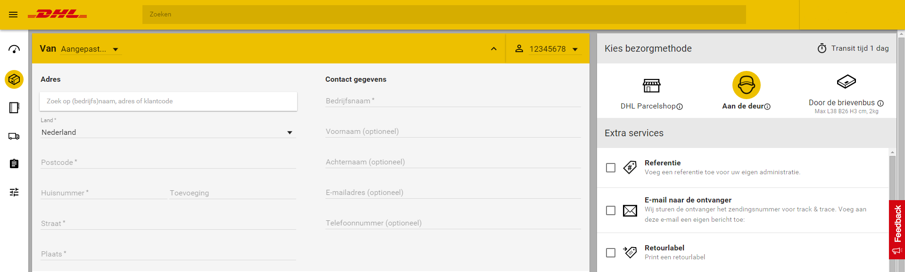
Optie 2: Handmatig een retourlabel aanmaken
Deze optie is alleen beschikbaar binnen de Benelux. U kunt makkelijk een retourlabel aanmaken door een alternatief verzendadres in te stellen en uw eigen gegevens bij de ontvangergegevens in te vullen. Klik in het scherm Nieuwe zending op de gele balk om uw standaardverzendadressen te bekijk en klik vervolgens op Ander verzendadres
Tip: wilt u een afhaling boeken? Vergeet dit dan niet te doen na het aanmaken van uw retourzending(en). U boekt uw afhaling in het Pick-up scherm.
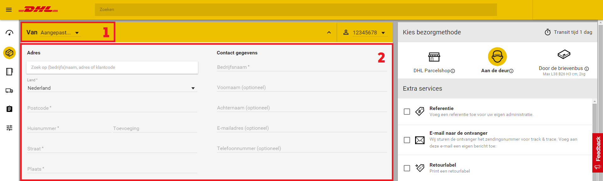
Optie 3: Retourlabel versturen via een bestaande verstuurde zending
Wil uw ontvanger een pakket retour sturen? U kunt snel een retourlabel aanmaken aan de hand van de heenzending. Ga naar Verstuurde zendingen.
Selecteer de zending die uw ontvanger retour wil sturen en kies vervolgens voor E-mail retourlabel. De ontvanger ontvangt direct zijn retourlabel via e-mail. Deze optie is niet voor alle landen mogelijk. Vraag uw accountmanager voor welke landen u deze optie kunt gebruiken.
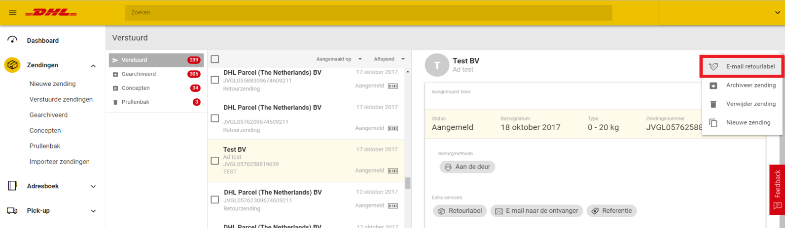
Optie 4: Boek een pick-up met retourlabel
Deze optie is alleen beschikbaar binnen de Benelux. Wilt u dat de chauffeur een zending ophaalt bij uw ontvanger en zelf het label meebrengt? Dan gaat u naar het scherm Boek pick-up.
Vul hier eerst uw klantnummer en de gewenste afhaaldatum in. Vul in de regel Afhalen op het adres in waar de chauffeur de zending af moet halen. Vervolgens vult u in de regel Doorsturen / retour naar (DHL neemt labels mee) het adres in waar de zending moet worden afgeleverd. Dit kan uw eigen adres zijn, maar de zending kan ook direct naar een ander adres worden doorgestuurd. Hoeft de chauffeur geen label mee te nemen? Dan kunt u dit veld leeg laten.
Als u een van deze adressen nog niet in uw adresboek had staan, dan klikt u op het plusteken. In het scherm dat uitklapt kunt u het adres handmatig invullen en opslaan voor in de toekomst door Opslaan in adresboek aan te vinken.
Tenslotte vult u het aantal pakketten en pallets in en klikt u op Boek pick-up.

Optie 5: Maak een retourenpagina aan
Wilt u uw ontvangers de optie geven om zelf retouropdrachten aan te maken? Maak dan een retourenpagina aan en zet de link naar deze pagina op uw eigen website of in uw e-mailberichten.
Ga naar Instellingen en naar het tabblad Retouren. Met de rode button Nieuwe retourenpagina voegt u een nieuwe pagina toe. Upload uw eigen logo en vul de adresgegevens in die als ontvangergegevens op de retourlabels moeten komen. Normaal gesproken zijn dit dus uw eigen adresgegevens. Klik op Opslaan. Belangrijk: vergeet de pagina niet te activeren door op de play-knop te klikken in het overzicht met retourenpagina’s. Gebruik ten slotte de Kopieer URL knop om de link op uw eigen website te kunnen plaatsen.
Door op het oog-icoontje te klikken kunt u een voorbeeld van uw retourenpagina bekijken.
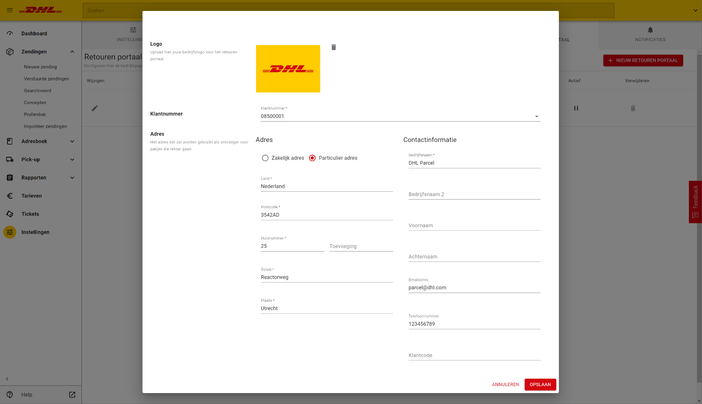
Pick-up boeken
Ga naar het Pick-up scherm en kies voor Boek pick-up.
Selecteer een adres (binnen de Benelux) vanuit uw adresboek en het klantnummer. Vul het aantal pakketten of pallets in en de datum aan waarop wij uw zendingen mogen afhalen. Geef eventueel een toelichting (let op het maximaal aantal tekens) mee voor onze bezorger, bijvoorbeeld waar hij zich op dit adres kan melden. Daarna kiest u voor Boek pick-up zodat onze bezorger een bericht krijgt dat uw zending klaarstaat voor afhaling. Links onderaan ziet u de bevestiging van uw succesvolle afhaalopdracht.
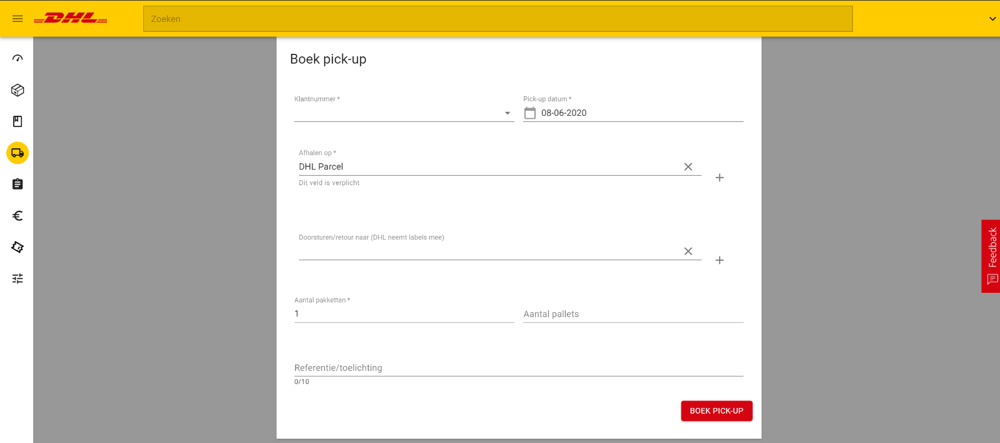
Let op: Als u geen vaste pick-up per dag heeft, hoeft maar één pick-up per dag in te boeken voor uw afhaaladres. Het is dus niet nodig om per zending een afhaalopdracht te boeken.
* Heeft u vaste afspraken gemaakt met uw contactpersoon van DHL over de dagen waarop de chauffeur bij u langskomt? Dan blijven deze afspraken staan. U hoeft in dit geval dus geen aparte afhaling te boeken. Wilt u de afhaling op een ander adres boeken? Dan boekt u wel een aparte afhaling. Wilt u een afhaling boeken op een adres dat nog niet in uw adresboek staat? Klik dan op het plusje en vul de adresgegevens handmatig in het scherm dat uitklapt.
Overzicht pick-ups
In het Pick-up scherm vindt u een overzicht van uw geboekte pick-ups. U vindt hier onder andere het pick-up nummer, de geplande afhaaldatum en het afhaaladres. Het adres van de bestemming is alleen zichtbaar wanneer u er voor heeft gekozen om een retour- of doorzendopdracht te boeken waarbij de chauffeur het label meebrengt.
U kunt in dit scherm een pick-up gemakkelijk herhalen. Klik hiervoor op het icoontje rechts in de kolom Acties. U komt nu in een scherm voor een nieuwe pick-up opdracht, waarbij zo veel mogelijk gegevens al zijn ingevuld. Om de pick-up te boeken klikt u op Boek pick-up.
Ten slotte kunt u een overzicht van uw pick-ups exporteren in een CSV-bestand door rechtsboven op Download als CSV te klikken.
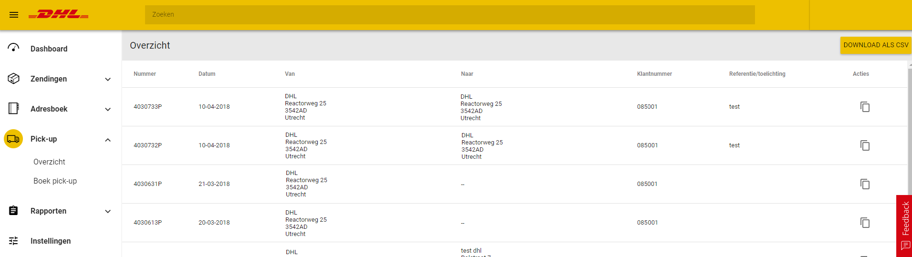
Adres- en zendingsgegevens importeren
Heeft u veel zendingen tegelijk te versturen? Dan boekt u deze zendingen waarschijnlijk liever niet stuk voor stuk in. Een mogelijkheid is om adres- en zendingsgegevens te importeren
Adresgegevens importeren
Download het template voor adressen. Maak in het template uw adressenbestand en sla dit op als txt- of csv-bestand 'comma delimited' (EN) of met 'lijstscheidingsteken' (NL). Alle kolommen zijn verplicht, behalve bedrijfsnaam 2, huisnummertoevoeging en telefoonnummer. Bedrijfsnaam is alleen verplicht voor een zakelijke zending.
Kies in het menu voor Adresboek en klik op Importeer adressen.
Importeer uw adressenbestand. Geef uw bestand een naam en koppel de kolommen van het bestand aan de velden van de applicatie. Na de eerste keer koppelen kunt u via het drop-down menu rechtsboven handig een eerder opgeslagen schema gebruiken.
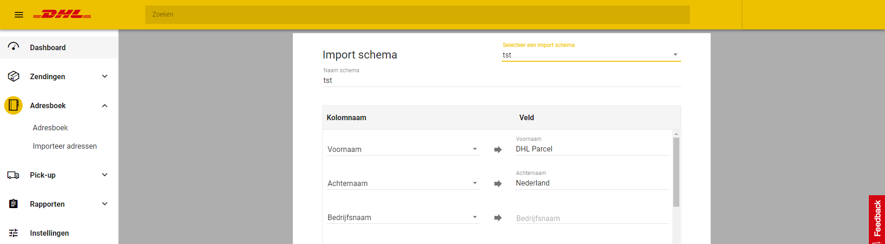
U vindt uw geïmporteerde adressen in het menu terug bij Adresboek. Hier kunt u altijd een adres bewerken of een nieuw adres toevoegen.
Zendinggegevens importeren
Download het template voor zendingsgegevens. Maak in de template uw lijst met zendingen klaar en sla dit op als txt- of csv-bestand 'comma delimited' (EN) of met 'lijstscheidingsteken' (NL). In de template worden de verplichte en optionele velden aangegeven bij de kolomnamen. Ga met uw muis naar de kolomnaam zodat de toelichting zichtbaar wordt voor meer uitleg.
Kies in het Zendingen scherm voor Importeer zendingen. Importeer uw bestand met zendingen. Geef uw bestand een naam en koppel de kolommen van het bestand aan de velden van de applicatie. Let op: wanneer u bij kolommen foutmeldingen ziet, bijvoorbeeld bij extra services, dan is het belangrijk in de hele rij een ‘0’ (uit) of ‘1’ (aan) te zetten. Na de eerste keer koppelen kunt u via het drop-down menu rechtsboven een eerder opgeslagen schema gebruiken.
U kunt ook een eigen template gebruiken. Let dan wel op dat alle verplichte velden worden gekoppeld. U kunt er dan voor kiezen om in de eerste kolom de drop down aan te passen van Kolom naar Vaste waarde. Hiermee kunt u dus alle opties standaard voor uw import toevoegen.
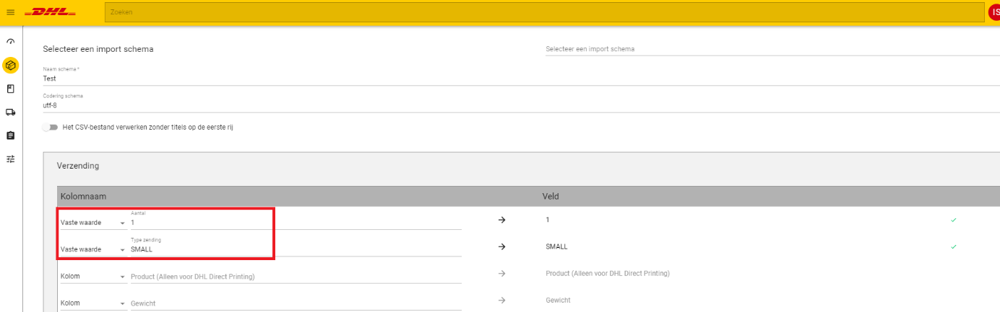
Ook kunt u de extra service als standaard selecteren.
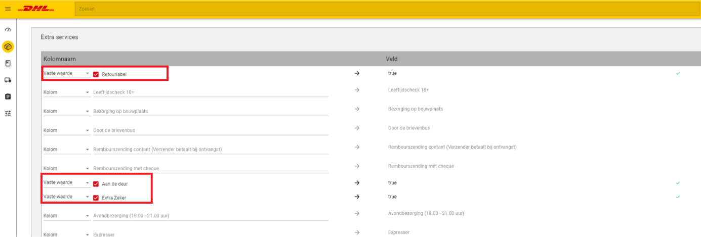
U vindt uw geïmporteerde zendingen terug in het menu Concepten.
Selecteer de zendingen en print uw labels uit. U kunt altijd een zending handmatig toevoegen in het Nieuwe zending scherm.
Tip: in het menu Instellingen kunt u bij de optie CSV importeren de juiste tekencodering van uw CSV-bestand kiezen.
Klantenservice ticket aanmaken
Maak gemakkelijk een ticket aan binnen MDP, als u of uw klant een vraag heeft over een van uw zendingen. Op deze manier bespaart u tijd doordat u geen adresgegevens over hoeft te nemen en heeft u een overzicht van de openstaande tickets. Kies één van onderstaande manieren om een ticket aan te maken.
Via verstuurde zendingen
Ga vanuit het dashboard naar Zendingen en klik vervolgens op Verstuurde zendingen. Vink in het overzicht aan om welke zending het gaat.
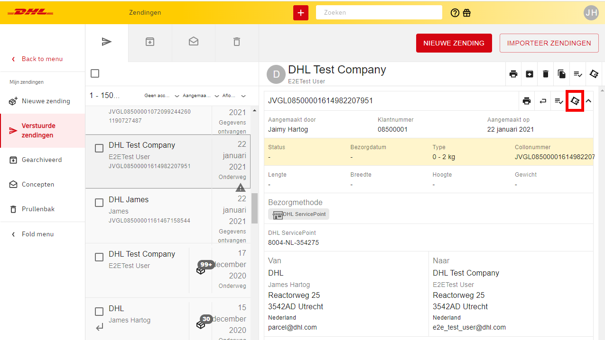
Klik op de Ticket knop, om vervolgens een case aan te maken bij de klantenservice.
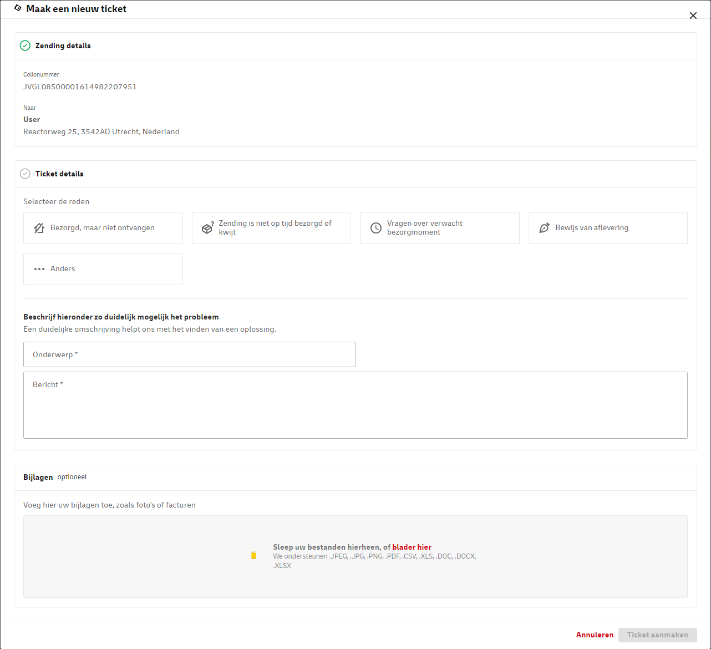
Selecteer een reden en vul vervolgens zoveel mogelijk gegevens in. Hoe meer informatie we ontvangen, hoe beter we het onderzoek voor u uit kunnen voeren. Let op: bij een Parcel Connect zending, is het verplicht de factuur of invoice als bijlage toe te voegen.
Alle aangemaakt tickets verschijnen in het tabblad Tickets: .
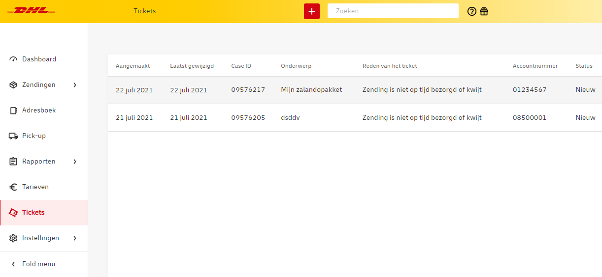
Updates over uw zending vanuit de klantenservice, vindt u terug in het Tickets scherm
Wilt u de tickets zichtbaar maken voor uw collega’s, neem dan contact op met Sales Support via 088-3454344 of stuur een e-mail naar parcelsales.utrecht@dhl.com.
Via het rapportage scherm
De 2e manier om een ticket aan te maken, is via het Rapportage scherm.
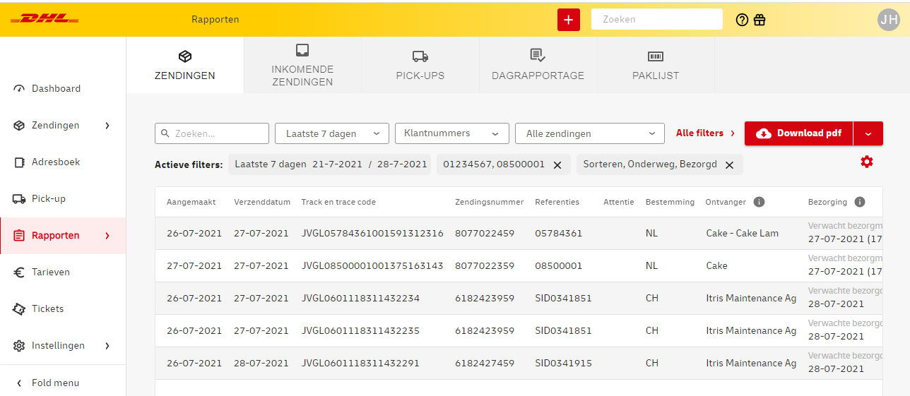
Ga vanuit het dashboard naar Rapporten en klik vervolgens op Zendingen. Selecteer de zending en klik op de zending waar u een ticket voor wilt aanmaken. Kies in het detailoverzicht voor Open een ticket voor dit pakket.
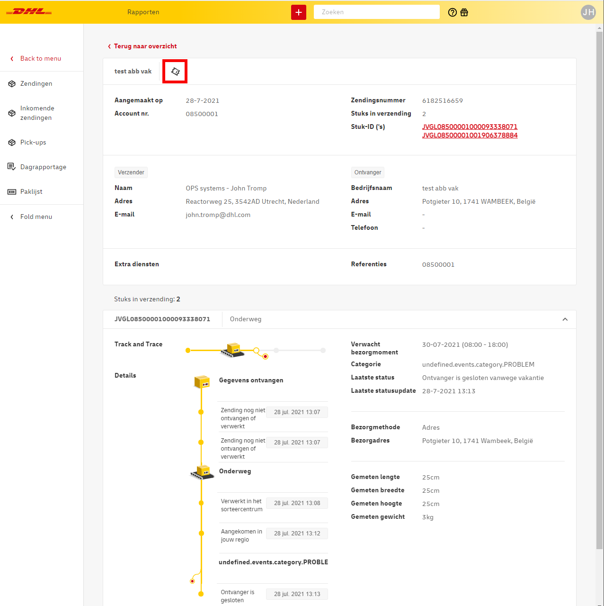
Klik op de Ticket knop, om vervolgens een case aan te maken bij de klantenservice.
Selecteer een reden en vul vervolgens zoveel mogelijk gegevens in. Hoe meer informatie we ontvangen, hoe beter we het onderzoek voor u uit kunnen voeren. Let op: bij een Parcel Connect zending, is het verplicht de factuur of invoice als bijlage toe te voegen.
Alle aangemaakt tickets verschijnen in het tabblad Tickets: .
Updates over uw zending vanuit de klantenservice, vindt u terug in het Tickets scherm
Wilt u de tickets zichtbaar maken voor uw collega’s, neem dan contact op met Sales Support via 088-3454344 of stuur een e-mail naar parcelsales.utrecht@dhl.com.
Zending volgen met track en trace
Kies in het Zendingen scherm voor Verstuurde zendingen. Hier kunt u uw zendingen volgen met track en trace door op een zending te klikken. U ziet wanneer uw zending door ons is ontvangen, in bezorging is en wanneer het is afgeleverd. U kunt hier ook een verzendbewijs downloaden of per mail versturen.
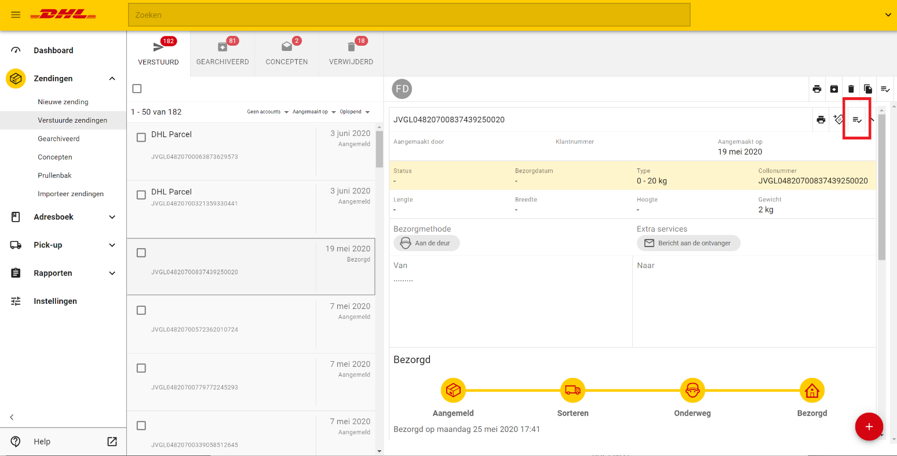
Voor het eenvoudig volgen van meerdere zendingen is het Verzendrapport een goede optie. Daarnaast kunt u altijd de Zoekfunctie bovenin het scherm gebruiken om specifieke zendingen te vinden.
Heeft u vragen over uw zending? Neem dan contact op met onze klantenservice.
Gebruikers beheren
Kies in het menu voor Instellingen en ga naar Gebruikersbeheer.
Klik op Toevoegen om nieuwe gebruikers toe te voegen. Hier kunt u ook direct de rechten per gebruiker instellen en klantnummers selecteren die voor deze gebruiker gelden. Zo kunnen ‘Gebruikersbeheerders’ gebruikers aanmaken en kunnen ‘Reporting Managers’ rapportages inzien. 'Tariefmanagers' kunnen de tarieven van de koppelde klantnummers inzien en 'Api Gateway-gebruikers' kunnen API toegangsgegevens genereren voor bijvoorbeeld het koppelen van de DHL-plugins. U kunt de rechten van een gebruiker altijd wijzigen door rechts te klikken op de drie puntjes en vervolgens op Wijzig. Kies in het verschijnende scherm de rechten en klik op Opslaan.
Let op: u kunt een gebruiker maar één keer toevoegen. Heeft u een gebruiker per ongeluk verwijderd? Neem dan contact met ons op.
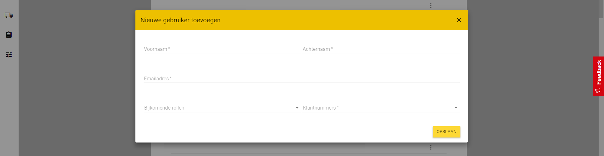
Rapporten
Verzendrapport
Kies in het menu voor Rapporten en ga naar Zendingen. Selecteer één of meerdere klantnummers. Kies de periode waarover u het totaal aantal zendingen wilt inzien. U krijgt onder andere een overzicht van uw verstuurde zendingen met het zendingsnummer, de verzenddatum en de leveringsdatum. Met Alle filters kunt u uw resultaten nog verder verfijnen, en bijvoorbeeld zoeken op specifieke statussen en bestemmingen.
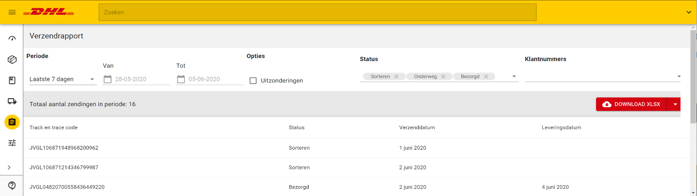
Kies voor Download als PDF, Excel of CSV om de gegevens te downloaden. Kiest u voor een csv-bestand dan vindt u hier een korte uitleg om de gegevens te splitsen in kolommen. Uw kunt ook een Excel-bestand downloaden, mits deze niet te groot is.
Inkomende zendingen
In het Inkomende zendingen tabblad ziet u zendingen die naar u onderweg zijn. Dit rapport bevat retourzendingen en andere DHL-zendingen die gericht zijn aan het e-mailadres van uw My DHL Parcel account. Voeg eenvoudig meer ontvangers e-mailadressen toe in het menu Instellingen. Let op: zendingen die aan u zijn gericht, maar waarvoor geen ontvanger e-mailadres is opgegeven, ziet u niet in dit rapport.
Filter eenvoudig op e-mailadres en tijdsperiode, of zoek een specifieke zending met behulp van het zoekveld. Kies voor Download als PDF, Excel of CSV om de gegevens te downloaden.
Dagrapport
U kunt een dagrapportage downloaden van de zendingen die u met My DHL Parcel heeft verstuurd. Kies in het menu voor Rapporten en ga naar Dagrapportage.
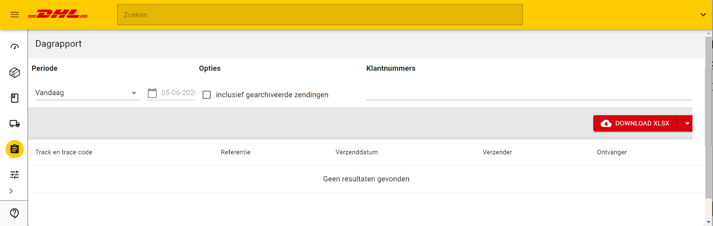
Selecteer de gewenste datum en kies voor Download om de gegevens te downloaden als pdf-bestand. Een zending komt alleen in een dagrapport te staan wanneer deze onder Verstuurde zendingen staat.
Tarieven
Wanneer uw gebruikersaccount de juiste rechten heeft, kunt u in het scherm Tarieven de tarieven inzien die verbonden zijn aan uw accountnummer(s). U filtert de tarieven eenvoudig op type ontvanger, type zending en land van bestemming. Als er in de toekomst nieuwe tarieven van toepassing zijn, bijvoorbeeld omdat u een nieuw product in gebruik neemt, dan vindt u deze tarieven door Toon toekomstige tarieven aan te vinken.
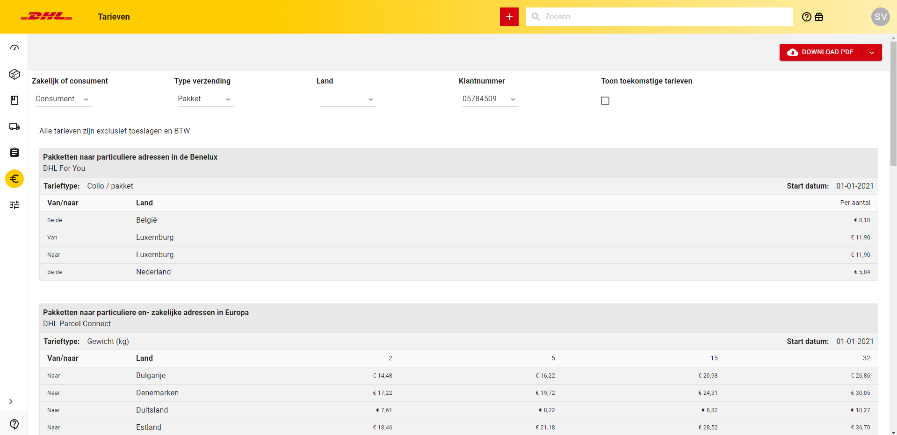
Exporteer uw tarieven eenvoudig als Excel- of PDF-bestand via Download rechtsboven in het scherm.
Overige instellingen
E-mailnotificaties personaliseren
Wanneer het e-mailadres van de ontvanger bij DHL bekend is, bijvoorbeeld omdat u deze bij het aanmaken van de zending heeft ingevuld, dan houden wij de ontvanger op de hoogte over de zending met automatische e-mailberichten. Deze notificaties kunt u personaliseren met uw eigen logo.
Ga hiervoor naar het tabblad Notificaties in het menu Instellingen.
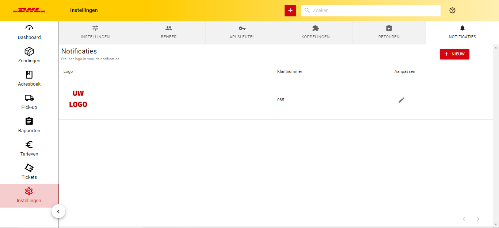
Klik op Nieuw. Kies in het scherm dat verschijnt het klantnummer waarvoor u een logo wilt instellen. E-mailnotificaties voor zendingen die op dit nummer worden aangemaakt zullen het logo bevatten, ook als de zendingen niet in My DHL Parcel zijn aangemaakt. Klik op Selecteer een bestand en upload een afbeelding. Voor logo's geldt dat ze vaak het beste in PNG-formaat worden getoond, en zijn minimale afmetingen van 100x100 pixels aan te raden. Kies vervolgens de gewenste uitsnede van de afbeelding door het selectieveld te verslepen, verkleinen of vergroten. Klik ten slotte op Opslaan.